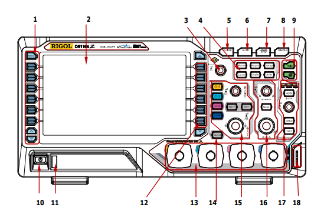
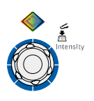
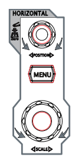
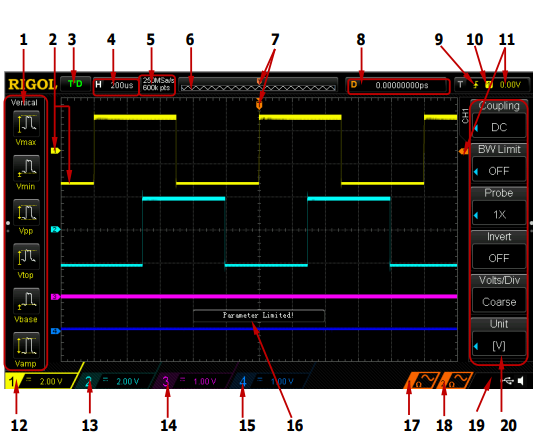

The challenge is to measure the speed of sound in air using an oscilloscope. This is a typical A-level Physics experiment. I found this quite a tricky one to get right from a technical perspective. Possibly due to my equipment, maybe my technique. If you have any suggestions for how to improve please use the comments below. The procedure is as follows:
Step 1: Plug a speaker into a signal generator and set it to something in the few thousand hz range.
Step 2: Plug the signal generator into one of the scope channels.
Step 3: Plug a microphone into the scope and set it in line with the speaker about a meter away.
Step 4: Set up the scope to capture the waveform of both the signal generator and the microphone.
Step 5: Move the speaker or microphone back and for until both waves are in phase.
Step 6: Move the microphone and speaker apart until they are in phase again. Measure this distance.
Step 7: Compare theory with reality.
More details now follow:
Step 1:
This is fairly straight forward. See the image below for my cheapo Ebay signal generator setup. It's not the best bit of kit: the signal is a bit weak and not very clean, but it will illustrate the process. I recommend using a decent quality signal generator if you can get access to one. You should also notice that I've kept the wires short and put 50 ohm resistor in series with the signal generator. Some Google searches recommended these adjustments and I seemed to get a better signal so I stuck with it. You should hear a sound that will probably be fairly annoying. The sound from my setup is a bit quiet so any outside noises affect the signal. A better signal generator should improve this.

Step 2:
Again fairly straight forward, just take one of the scopes probes, flick the switch on the probe to 1x, and connect the ground (crocodile clip on short wire) to one terminal of the speaker and the probe tip to the other end of the speaker. You can see this in the image above.
Step 3:
This is where it all started to get complicated (at least it did for me). I tried several microphones and could not get a reading on the scope. It looks like the voltage level is too low and noise levels too high to see the waveform adequately. After doing some internet research I discovered that not all microphones are created equally. It seems that an active microphone that contains some amplification circuitry is required to get this experiment to work well or at all really. (If anyone has suggestions to the contrary then please comment below). As a hack that gets this working with no extra spending I discovered that the humble mobile phone contains everything required. All you need is an old set of headphones you don’t mind cutting the headphones off. After cutting the headphones off and exposing the wires connect the ground of the scope probe and the probe tip to each of the exposed wires. Connect this cable to your phone.
I’m using an android phone with an app called microphone amplifier. Set the audio gain to about 16 (you can experiment with this later) turn the speaker on and hit the on button in the middle. Make a noise and you should see a wave form appear on the mobile phone screen. See example image below.

However, for good experimental results I recommend a decent quality active microphone.
Step 4
You should now have the signal generator outputting a sound on the speaker, the scope connected to the speaker on channel 1 and the scope connected to the mobile phone on channel 2. The phone should have a waveform on the screen when you make a noise.
Now go to the scope controls. I Will use the figures at the bottom of this post to reference the controls.
- Make sure channel 1 is turned on and for now channel 2 is turned off by pressing the buttons next to the channel numbers (figure 1 - 12).
- Make sure the settings are the same as in the image below. To change the menu item you press the button next to it (figure 1 -12) twist the dial (figure 1 - 3, figure 3) and press the dial to select it. Make sure your values match those in the image.
- Press the Auto button (figure 1 - 6 ) You should now see the output from the signal generator, which should be a nice steady sine wave.
- My signal generator was not giving me a very clean waveform, especially when it was connected to a speaker. (Depending on your equipment you may be able to omit this step). I setup the scope to average the waveforms. You can do this by pressing the Aquire button (figure 1 - 4) and setting up the like the image below. You can experiment with the number of averages.
- You can get the scope to measure this frequency of this waveform by pressing the button on the left of the screen (figure 1 - 1). You should see this measurement displayed at the bottom of the screen and it should correspond closely with the frequency you set on the signal generator.
- Now we need to setup channel 2. Press the button to turn on channel 2 (figure 1 - 12). Turn the switch on the probe to 1X and setup the right hand menu like the image below.
Pay special attention to make sure the channel is set to AC coupling. You will probably need to set the vertical voltage range by turning the dial (figure 1 - 15, figure 2 - bottom). You will probably also need to set up averaging like the previous step. You should now see both traces like the image above. - We now need to adjust the position of the waveforms in the vertical direction so that the bottom of one waveform just touches the top of the other waveform. You can do this by selecting the channel you want by pressing the button next to the channel number (figure 1 - 12) then turning the dial (figure 1 - 15, figure 2 - top).
Step 5
Move the microphone and or speaker away from each other until the trough of one waveform touches the peak of the other waveform. Your screen should look something like the image below. Record the position of the microphone and speaker.
Step 6
Move the microphone and or speaker away from each other until and watch the screen, you should be able to match the trough of one wave to the next peak of the other wave. Record the positions of the microphone and speaker again. The difference between the position in the previous step to the position in this step should be one wavelength.
Step 7
You can now calculate the speed of sound by multiplying the frequency by the wavelength.
Figure 1 
| Figure 2 | Figure 3 | Figure 4 | Figure 5 |
|---|---|---|---|
 |
 |  |  |
Figure 6 
Comments